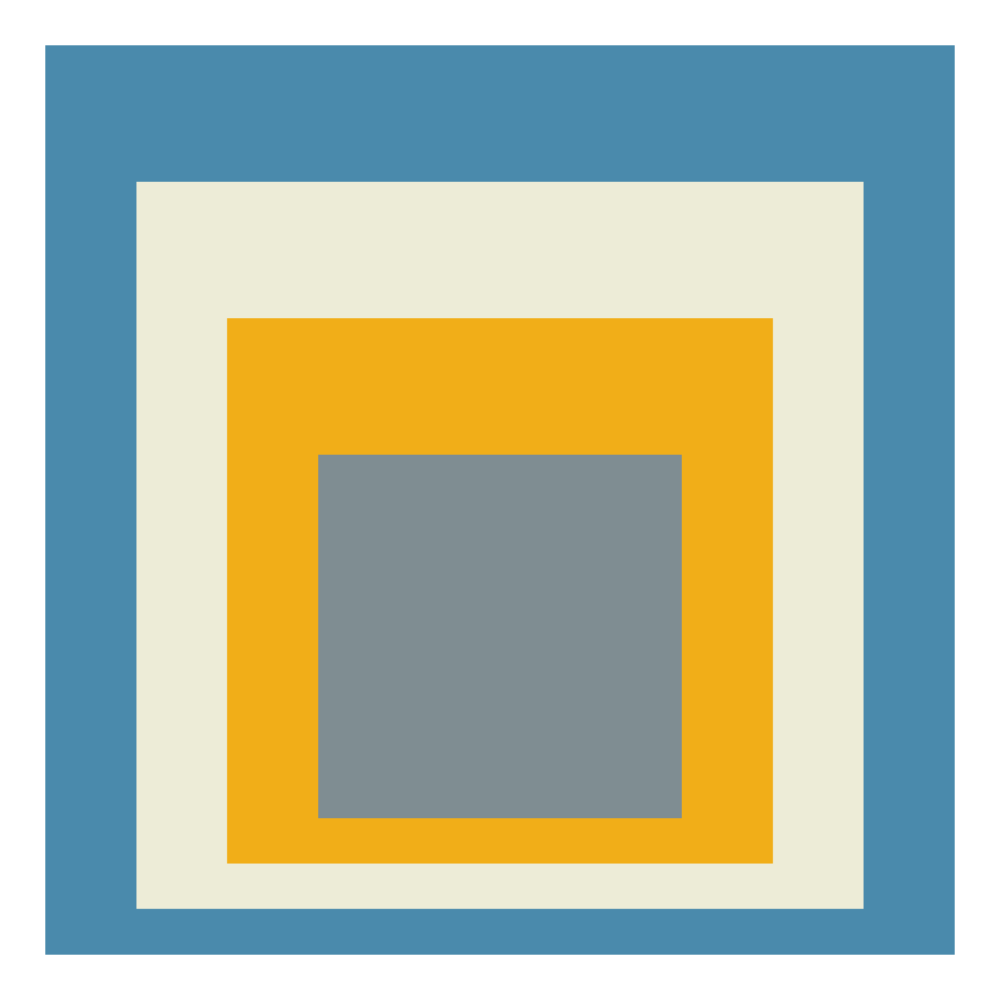
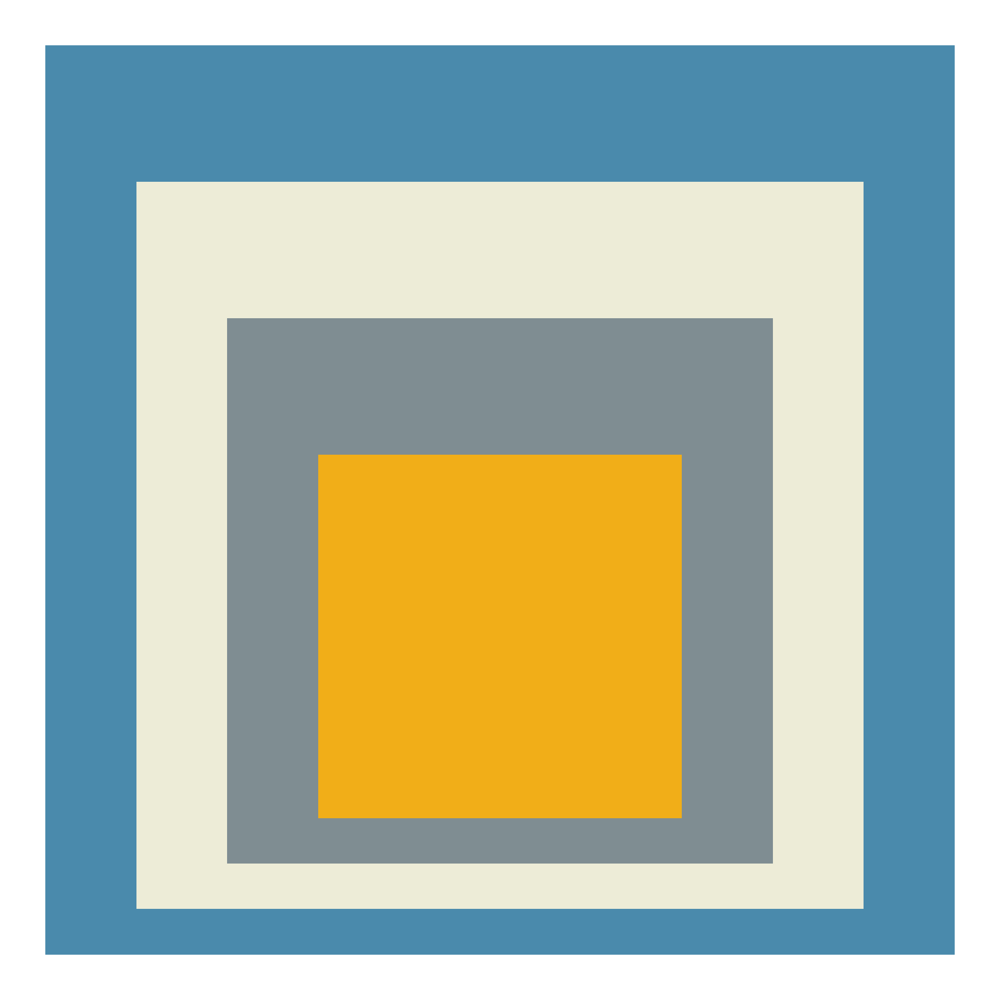
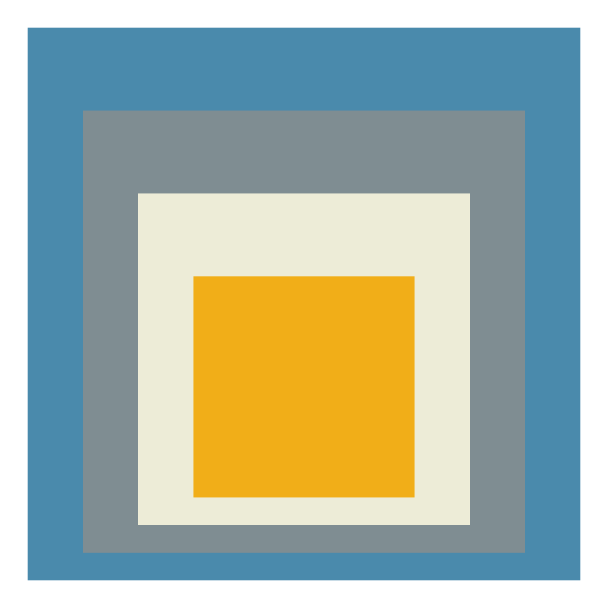
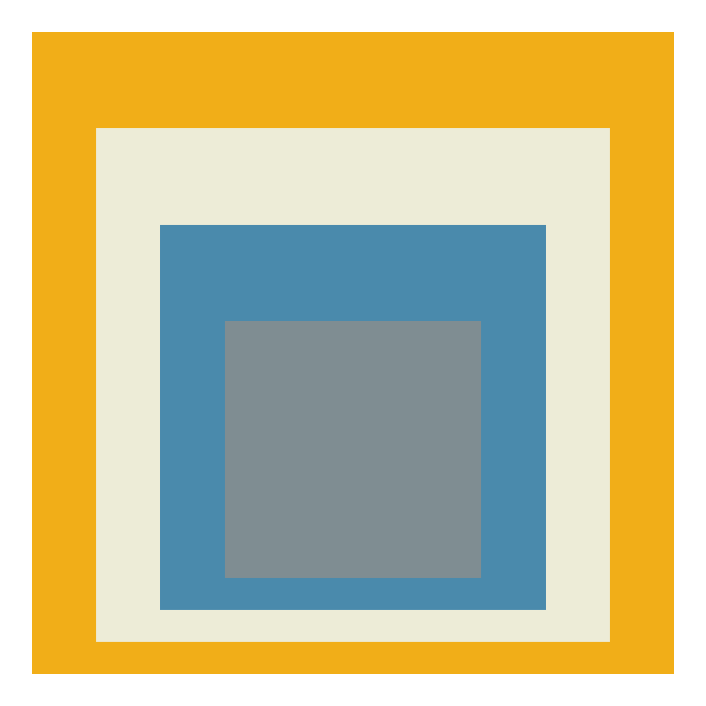
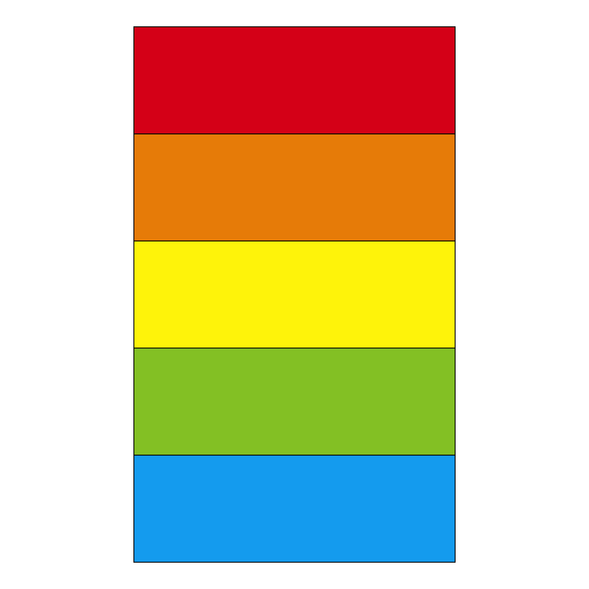
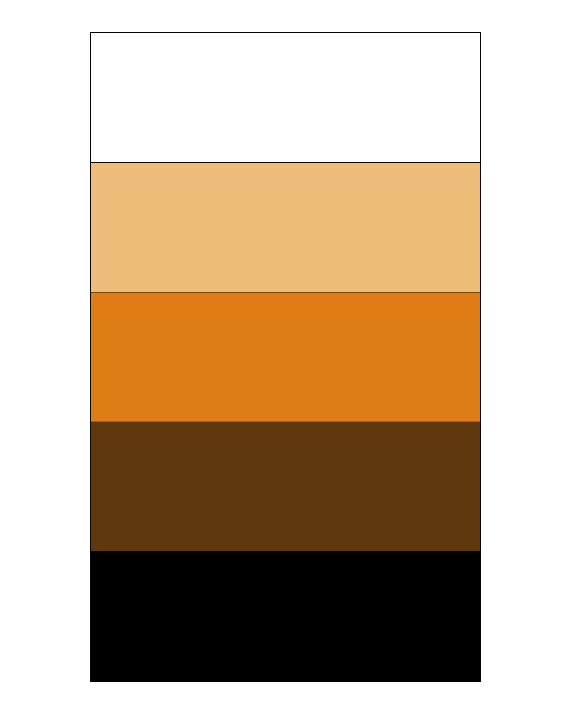
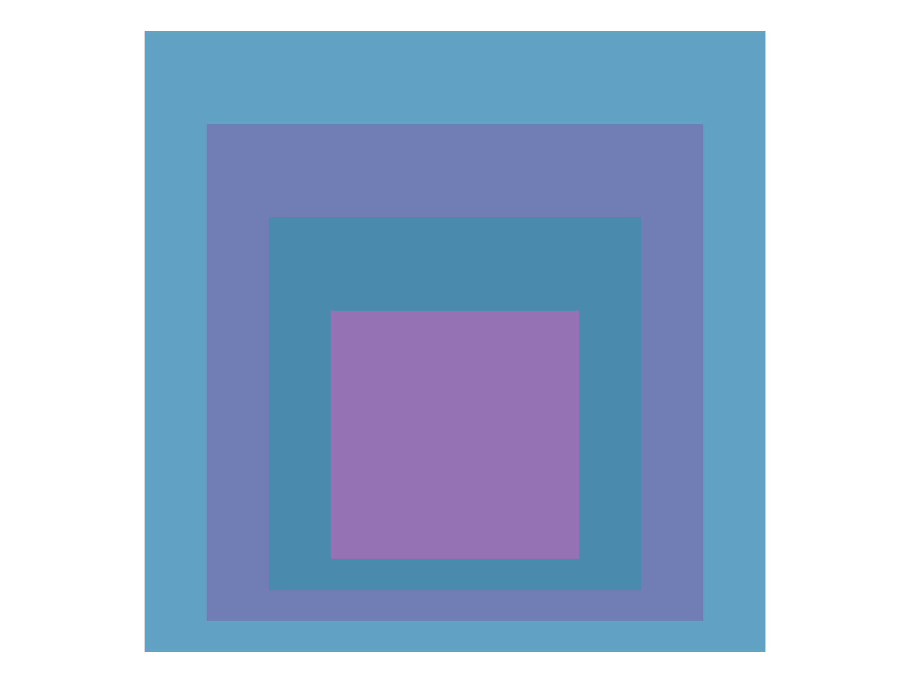

Steal like an Rtist: Creative Coding in R
Homage to the Square
Josef Albers
posit::conf(2023)
Recreate






HSL
Hue
Color on the color wheel
(0 to 360)
Saturation
Vividness, how much of the color is actually present
From grey to full saturation of the color (0% to 100%)
Lightness
How light/bright the color is
From black to white (0% to 100%)



Hue

Hue

Back to the Homages…
extract_hsl <- function(data) {
data %>%
mutate(
color = color(color),
h = clr_extract_hue(color),
s = clr_extract_saturation(color),
l = clr_extract_lightness(color)
) %>%
select(color, h, s, l)
}
homage_hsl <- homage %>%
extract_hsl()
homage_hsl# A tibble: 4 × 4
color h s l
<colors> <dbl> <dbl> <dbl>
1 #5A9CBAFF 199. 41.0 54.1
2 #919EA3FF 197. 8.91 60.4
3 #F1EFDFFF 53.3 39.1 91.0
4 #F5BB1DFF 43.9 91.5 53.7

“If one says ‘red’ (the name of a color) and there are 50 people listening, it can be expected that there will be 50 reds in their minds. And one can be sure that all these reds will be very different.”
— Josef Albers, Interaction of Color (1963)
Monochromatic

Analogous
That was a bit ugly - add contrast in other ways


What inspires you?